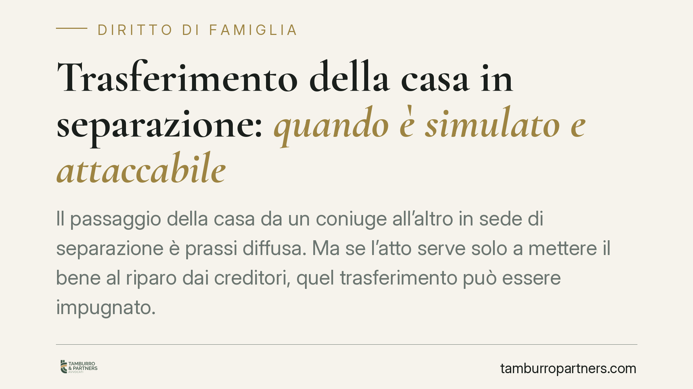

Trasferimento della casa in separazione: quando è simulato e attaccabile
Il passaggio della casa da un coniuge all'altro in sede di separazione è prassi diffusa. Ma se l'atto serve solo a mettere il bene al riparo dai creditori, quel trasferimento può essere impugnato. La giurisprudenza di legittimità valuta il comportamento tenuto dalle parti dopo l'accordo come indizio del carattere fittizio dell'operazione. Vediamo quando e con quali strumenti.

Il contesto
Nelle separazioni consensuali è frequente che uno dei coniugi trasferisca all'altro la casa familiare o altri immobili. Fino a quando l'operazione riguarda solo la coppia, il problema non si pone. Cambia tutto quando esistono creditori: la cessione può nascondere il tentativo di svuotare il patrimonio del coniuge debitore, sottraendo beni alla possibile esecuzione forzata.
Su questo tema la giurisprudenza di legittimità è consolidata: un trasferimento immobiliare inserito negli accordi di separazione non è di per sé intoccabile. Se emerge che l'atto è stato costruito solo per apparenza, i creditori dispongono di strumenti precisi per reagire.
Inquadramento normativo
Il primo strumento è l'azione di simulazione, disciplinata dall'art. 1414 cod. civ.. Nella simulazione assoluta le parti stipulano un contratto senza volerne alcun effetto reale: vogliono solo l'apparenza dell'atto. La norma stabilisce che, in tal caso, il contratto simulato "non produce effetto tra le parti".
È opportuna una precisazione tecnica. Il testo dell'art. 1414 parla di inefficacia tra le parti, non di nullità in senso proprio. La qualificazione dell'atto simulato assoluto resta discussa: parte della dottrina e della giurisprudenza la ricostruisce in termini di nullità, altra parte come mera inefficacia. Ai fini pratici, ciò che conta è il risultato: l'atto simulato non produce l'effetto traslativo voluto solo in apparenza, e il bene resta aggredibile.
Diverso è il piano dell'azione revocatoria (art. 2901 cod. civ.). Qui l'atto è reale ed effettivamente voluto, ma pregiudica il creditore, che può chiederne la dichiarazione di inefficacia nei propri confronti. La distinzione è essenziale: con la simulazione si dimostra che l'atto è finto; con la revocatoria si accetta che l'atto è vero, ma lo si rende inopponibile al creditore.
La prova della simulazione, quando manca un accordo scritto tra i coniugi, passa quasi sempre per le presunzioni. L'art. 2729 cod. civ. consente al giudice di fondare la decisione su presunzioni "gravi, precise e concordanti". Sono gli indizi a rivelare la natura fittizia dell'operazione.
Gli indizi che pesano
Il giudice guarda soprattutto al comportamento delle parti dopo il trasferimento. Alcuni elementi ricorrenti:
- il coniuge che ha ceduto la casa continua ad abitarvi o a sostenerne le spese;
- l'immobile viene trasferito senza un reale corrispettivo o a fronte di rinunce economiche squilibrate;
- l'atto è tempestivo rispetto all'insorgere del debito o all'avvio di azioni esecutive;
- non muta la gestione concreta del bene (utenze, manutenzione, godimento).
Presi singolarmente questi elementi dicono poco. Valutati insieme, se convergenti, possono fondare la prova che il trasferimento era solo di facciata.
L'omologazione non protegge verso i terzi
Un punto spesso frainteso: il fatto che l'accordo di separazione sia stato omologato dal tribunale non mette il trasferimento al riparo dalle contestazioni dei creditori. L'omologazione riguarda i rapporti tra i coniugi e la regolarità dell'accordo, non certifica la genuinità economica delle attribuzioni patrimoniali né rende l'atto opponibile a chi vi è estraneo. Il creditore terzo conserva pieno diritto di agire per simulazione o revocatoria.
Va segnalato, sul piano fiscale, che operazioni di questo tipo possono in astratto assumere rilievo anche ai sensi dell'art. 11 D.Lgs. 74/2000 (sottrazione fraudolenta al pagamento delle imposte), quando finalizzate a rendere inefficace la riscossione. Il richiamo va inteso in termini prudenziali e va verificato caso per caso.
Implicazioni pratiche
Per chi riceve la casa in separazione, il rischio è vedere l'atto travolto anni dopo, con effetti sulla stabilità della proprietà. Per il creditore, esistono al contrario margini concreti di recupero anche quando il debitore appare formalmente privo di beni. In entrambi i casi, l'esito dipende dalla ricostruzione dei fatti e dalla solidità degli indizi.
Cosa fare in concreto
- Documentate la realtà economica dell'atto. Se il trasferimento è genuino, conservate prove del corrispettivo, del mutamento nella gestione del bene e delle ragioni dell'accordo.
- Verificate la posizione debitoria prima di trasferire. Un'attribuzione immobiliare disposta in presenza di debiti esposti va valutata con particolare attenzione.
- Non confidate nella sola omologazione. L'accordo omologato non è uno scudo verso i creditori.
- Se siete creditori, agite tempestivamente. Ricostruite gli indizi e valutate lo strumento più adatto tra simulazione e revocatoria, che hanno presupposti e termini diversi.
- Fatevi assistere prima, non dopo. La qualificazione corretta dell'operazione va impostata in fase di redazione dell'accordo.
---
*Contributo informativo a cura di Tamburro & Partners - Avv. Giuseppe Tamburro. Non costituisce parere legale.*
Ogni famiglia ha il suo equilibrio.
Separazione, divorzio, affidamento, assegno: se vuoi un confronto riservato su una specifica situazione, scrivi allo studio. Ti rispondiamo entro un giorno lavorativo.